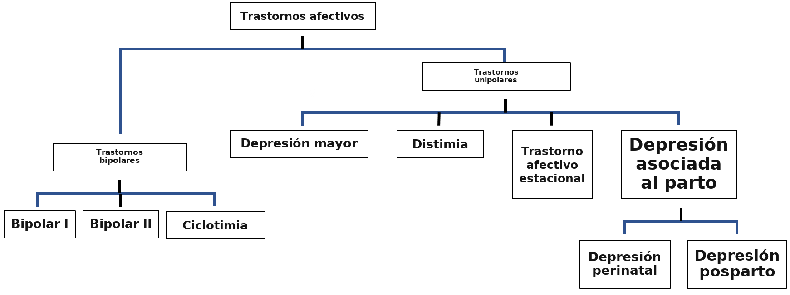
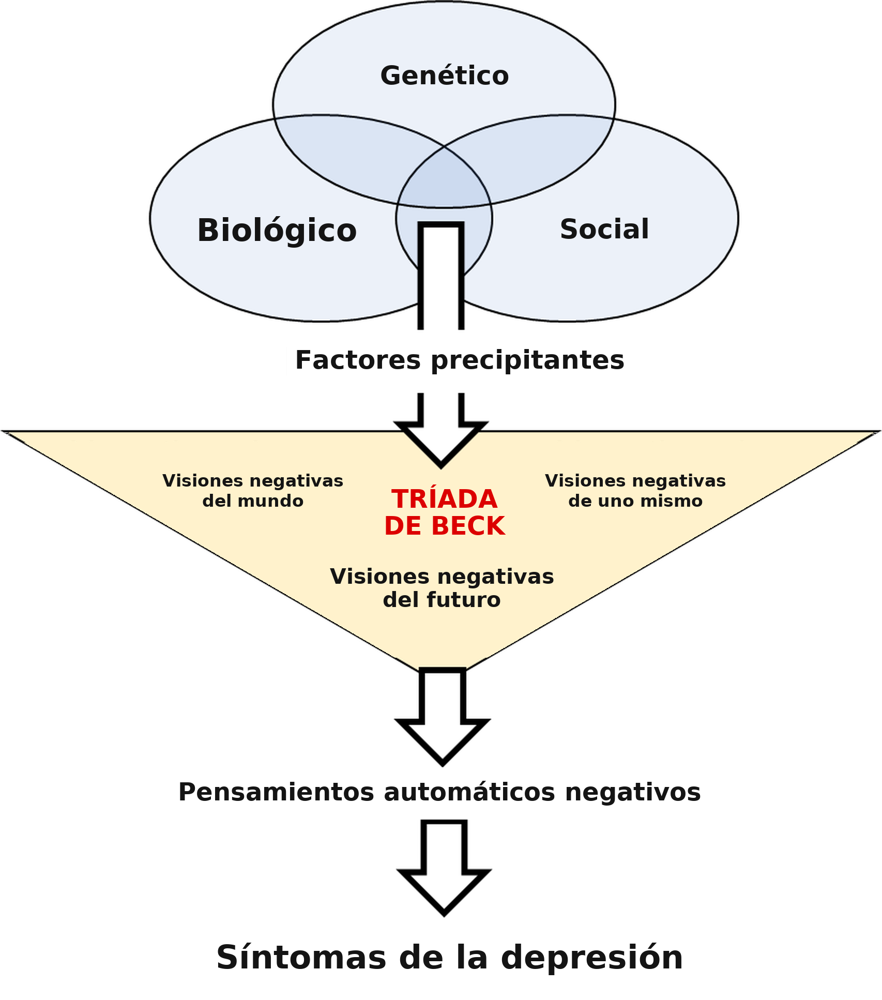
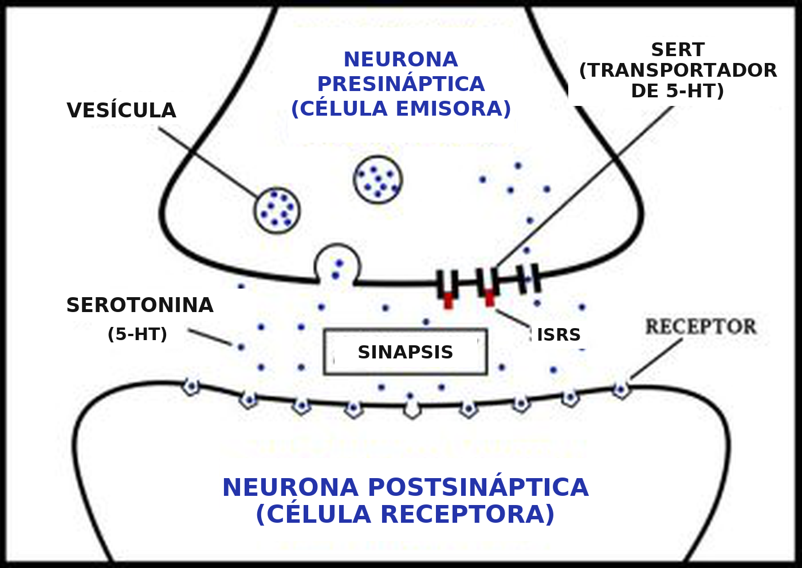
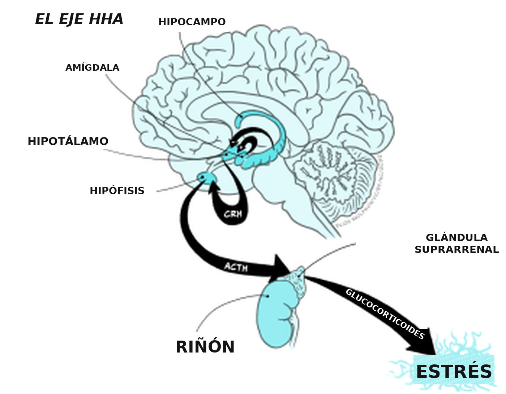

Trastornos del estado de ánimo
Objetivos de aprendizaje
- Conocer los principales grupos de síntomas asociados con los trastornos afectivos, entre ellos el trastorno bipolar y la depresión mayor.
- Conocer los criterios diagnósticos que se utilizan.
- Conocer los fundamentos de la teoría monoaminérgica de la depresión.
- Comprender el sustento teórico de los enfoques actuales del tratamiento farmacológico de la depresión, basado en la teoría monoaminérgica, y apreciar las limitaciones de esos enfoques.
- Comprender la base teórica que vincula la depresión con alteraciones de las respuestas de estrés en el encéfalo, y apreciar cómo ese marco teórico orienta el desarrollo de antidepresivos nuevos.
Panorama de los trastornos afectivos
Los trastornos afectivos, o trastornos del estado de ánimo, son un grupo de alteraciones psicológicas que se caracterizan por un estado emocional anómalo y que, en general, se manifiestan como trastornos depresivos. Entre los trastornos depresivos, las dos afecciones más prevalentes son la depresión unipolar mayor (trastorno depresivo mayor) y el trastorno bipolar, caracterizado por la alternancia de depresión y manía, aunque también importan otras afecciones, entre ellas la distimia, el trastorno ciclotímico, el trastorno afectivo estacional y la depresión prenatal y posnatal (Figura 6.4). Ocurren a lo largo de toda la vida, aunque la incidencia en la preadolescencia es baja, y sus características son esencialmente las mismas en todas las edades y en todas las culturas.

La depresión se caracteriza por sentimientos persistentes de tristeza, pérdida de interés, sentimientos de inutilidad y baja autoestima. La depresión mayor y la distimia comparten síntomas similares, con episodios prolongados de ánimo deprimido: la diferencia principal es la gravedad de los síntomas, y la distimia muestra síntomas menos graves y menos duraderos. El trastorno bipolar, en cambio, se caracteriza por períodos similares de depresión, intercalados con períodos de euforia extrema, actividad alta, excitación y autoestima inflada, que se denominan manía. Como en las enfermedades depresivas, la diferencia principal entre el bipolar I, el bipolar II y la ciclotimia es la gravedad de los síntomas y el grado de interferencia con la vida cotidiana.
El diagnóstico de los trastornos afectivos usa criterios diagnósticos establecidos en la Clasificación Internacional de Enfermedades, 11.ª revisión, de la Asociación Estadounidense de Psiquiatría (DSM-5), o en la Clasificación Internacional de Enfermedades, 11.ª revisión, de la Organización Mundial de la Salud (CIE-11), que se centran en los rasgos clave de la afección y orientan a quienes ejercen la clínica para diagnosticar estas afecciones.
Trastorno bipolar
El trastorno bipolar, antes llamado depresión maníaca, se caracteriza por ciclos de cambios extremos del estado de ánimo, desde períodos de un estado gravemente deprimido, semejante a la depresión mayor (véase más abajo), hasta períodos de euforia extrema, actividad alta y excitación (denominados manía). Durante un período maníaco, la persona puede experimentar autoestima inflada y un juicio pobre, que pueden llevarla a conductas riesgosas y a menudo destructivas, y también una menor necesidad de sueño y una inquietud general, acompañadas de agitación física y una menor capacidad de concentrarse. A menudo niega que haya algo mal y se vuelve irritable, en particular cuando se cuestionan decisiones dudosas. No está claro qué causa la manía. Intervienen factores genéticos, porque el trastorno bipolar tiende a presentarse en familias, aunque todavía no se identificaron genes específicos vinculados con él. Sin embargo, los factores genéticos solo dan cuenta de alrededor de la mitad de la vulnerabilidad, de modo que los factores ambientales y sociales también son claramente importantes.
Hay tres niveles de gravedad del trastorno bipolar. El bipolar I es la forma más grave y se caracteriza por episodios maníacos que duran al menos una semana, mientras que los episodios depresivos duran al menos dos semanas. Los síntomas de ambos pueden ser muy graves y a menudo requieren hospitalización. El bipolar II es similar, pero menos grave: en particular, los episodios maníacos son menos intensos y menos disruptivos (a menudo se los llama hipomanía) y no duran tanto. Las personas con bipolar II normalmente pueden manejar sus síntomas por su cuenta y rara vez requieren hospitalización. Hay un riesgo de progresar al trastorno bipolar I si no hay un tratamiento correcto, pero con un manejo adecuado ese riesgo puede mantenerse en alrededor del 10 %. La categoría menos grave es el trastorno ciclotímico, en el que la persona experimenta cambios de ánimo repetidos e impredecibles, pero solo de grado leve o moderado.
Diagnóstico
El diagnóstico de los trastornos bipolares exige la presencia tanto de síntomas depresivos (como se indica más abajo) como de tres o más de los rasgos de manía que se enumeran (euforia extrema, actividad alta, autoestima inflada, juicio pobre: véase el recuadro «Criterios diagnósticos del trastorno bipolar I», más abajo). La diferencia principal entre los criterios diagnósticos del bipolar I, el bipolar II y la ciclotimia es el grado de gravedad y el curso temporal de la expresión de los síntomas.
Criterios diagnósticos (DSM-5) del trastorno bipolar I
Para diagnosticar un trastorno bipolar I es necesario cumplir los criterios siguientes de un episodio maníaco. El episodio maníaco puede haber estado precedido por episodios hipomaníacos o depresivos mayores, y puede estar seguido por ellos.
Episodio maníaco
Un período definido de ánimo anormal y persistentemente elevado, expansivo o irritable, y un aumento anormal y persistente de la actividad dirigida a una meta o de la energía, que dura al menos 1 semana y está presente la mayor parte del día, casi todos los días.
Durante el período de alteración del ánimo y de aumento de la energía o de la actividad, están presentes en un grado significativo 3 (o más) de los síntomas siguientes (4 si el ánimo es solo irritable) y representan un cambio notable respecto de la conducta habitual:
- Autoestima inflada o grandiosidad.
- Disminución de la necesidad de sueño.
- Más hablador de lo habitual, o presión por seguir hablando.
- Fuga de ideas, o la experiencia subjetiva de que los pensamientos se aceleran.
- Distractibilidad.
- Aumento de la actividad dirigida a una meta, o agitación psicomotora.
- Participación excesiva en actividades con un alto potencial de consecuencias dolorosas.
- La alteración del ánimo es lo bastante grave como para causar un deterioro marcado del funcionamiento social o laboral, o como para necesitar hospitalización a fin de prevenir daño a sí mismo o a otras personas, o hay rasgos psicóticos.
- El episodio no se atribuye a los efectos fisiológicos de una sustancia (por ejemplo, una droga de abuso, un medicamento u otro tratamiento) ni a otra afección médica.
Fuente: The Diagnostic and Statistical Manual of Mental Disorders (5th ed.; DSM–5; American Psychiatric Association, 2013)
Incidencia del trastorno bipolar
El trastorno bipolar está presente en alrededor del 2 % de la población, y el bipolar I es más frecuente que el bipolar II: la prevalencia a lo largo de la vida es del 1 % y del 0,4 %, respectivamente. A diferencia de la depresión mayor (véase más abajo), los trastornos bipolares son igualmente prevalentes en varones y mujeres. El trastorno bipolar puede ocurrir en cualquier etapa de la vida, aunque es raro en la preadolescencia. La edad pico de inicio está entre los 15 y los 25 años, aunque el diagnóstico puede ser considerablemente más tardío, y la edad promedio de inicio del trastorno bipolar I (18 años) es un poco anterior a la del trastorno bipolar II (22 años). Es una causa importante de deterioro cognitivo y funcional, y de suicidio, en personas jóvenes.
Patología del trastorno bipolar
Se describieron varias anomalías encefálicas en el trastorno bipolar. Algunas se superponen con las que se ven en la depresión unipolar (véase más abajo), pero otras parecen específicas del trastorno bipolar y pueden representar cambios responsables de los episodios de manía. Aunque no se comprende bien la anomalía neuronal de base que causa la manía, se describieron cambios en varios marcadores químicos relacionados con la regulación de vías que modulan la función de los neurotransmisores y de vías neurotróficas, en la corteza, la amígdala, el hipocampo y los núcleos basales (también llamados ganglios basales). Eso sugiere una señalización química intracelular comprometida. En particular, hay evidencia de desregulación de vías de señalización intracelular que regulan la función de varios neurotransmisores, entre los que se destacan la dopamina, la serotonina, el glutamato y el GABA. Eso, a su vez, puede llevar a la desregulación de estos transmisores que se informó en la manía. La disminución del volumen de tejido encefálico informada en el trastorno bipolar, que refleja un menor número, densidad y tamaño de las neuronas, puede vincularse con las vías neurotróficas comprometidas, que llevan a respuestas neuroinflamatorias leves y a la neurodegeneración informada en regiones encefálicas localizadas en la manía. Por lo tanto, aunque la patología de la manía que se ve en el trastorno bipolar no se comprende bien, parece más probable que derive de anomalías en cascadas de señalización intracelular, quizá relacionadas con una neurodegeneración localizada por la disminución de factores neurotróficos.
Tratamiento
El tratamiento de primera línea del trastorno bipolar es la medicación antipsicótica: haloperidol, olanzapina, quetiapina o risperidona. Estos fármacos actúan sobre la señalización de dopamina y serotonina en el encéfalo, y es probable que estén corriente abajo de las anomalías primarias asociadas con la manía. Si el tratamiento antipsicótico no es eficaz, pueden indicarse estabilizadores del estado de ánimo, entre ellos el litio, el valproato o la lamotrigina, solos o combinados con antipsicóticos. El litio se usa de forma amplia en el tratamiento de la manía desde su introducción en 1949, pero los mecanismos por los cuales ejerce sus efectos estabilizadores del ánimo todavía se comprenden poco. Sin embargo, evidencia reciente lo vinculó con la modulación de vías de señalización intracelular, en particular las que involucran adenilato ciclasa, fosfato de inositol y proteína cinasa C: al competir con otros iones metálicos que normalmente regulan estas reacciones (por ejemplo, sodio, calcio, magnesio), pero que pueden haberse desregulado, puede revertir inestabilidades en esas reacciones. Es interesante que otros fármacos que también tienen efectos estabilizadores del ánimo, entre ellos el valproato y la lamotrigina, también modulan estas mismas cascadas de señalización intracelular. Por lo tanto, las acciones del litio y de otros fármacos estabilizadores del ánimo sobre estas vías aportan evidencia a favor de anomalías de estos mecanismos de señalización intracelular en la manía, y quizá abren vías nuevas para el tratamiento farmacológico, pero también proporcionan un mecanismo plausible por el cual los fármacos ejercen su acción terapéutica.
Además del tratamiento farmacológico, la psicoterapia tiene un papel importante en el tratamiento del trastorno bipolar. Puede incluir la terapia cognitivo-conductual (TCC), que ayuda a la persona a manejar el estrés y a reemplazar creencias negativas poco saludables por creencias positivas saludables, y la terapia del bienestar, que busca ayudar a la persona a manejar el estrés, reemplazar creencias negativas por creencias positivas y mejorar la calidad de vida en general, en lugar de centrarse en los síntomas. La psicoterapia es particularmente importante en el manejo de la ciclotimia, para reducir al mínimo el riesgo de que evolucione a un trastorno bipolar I o II.
Depresión mayor
La depresión mayor se caracteriza por sentimientos persistentes de tristeza, que se manifiestan como duraderos y generalizados, y que «bloquean» todas las otras emociones. Asociada con esto hay una pérdida de interés en aspectos de la vida (denominada anhedonia), que puede empezar como un letargo general, pero que en su extremo es una pérdida completa de interés en todos los aspectos de la vida cotidiana, incluida la salud y el bienestar. Además de estos síntomas emocionales hay un espectro de síntomas fisiológicos y conductuales, entre ellos alteraciones del sueño, enlentecimiento o agitación psicomotores, catatonia, fatiga o pérdida de energía. También hay síntomas cognitivos, entre ellos mala concentración y atención, indecisión, inutilidad, culpa, baja autoestima, desesperanza, pensamientos suicidas y delirios con temas depresivos. La distimia, también llamada trastorno depresivo persistente (DSM-5), se refiere esencialmente a síntomas similares, pero menos graves y con un curso temporal más crónico. Una persona puede padecer a la vez depresión mayor y distimia, lo que se denomina depresión doble.
Diagnóstico
Los criterios diagnósticos de la depresión mayor según el DSM-5 exigen la aparición de sentimientos de tristeza o ánimo bajo y de pérdida de interés en las actividades habituales de la persona, durante la mayor parte del día y por al menos dos semanas (Tabla 2). Es importante que los síntomas causen a la persona un malestar o un deterioro clínicamente significativos en lo social, lo laboral u otras áreas importantes del funcionamiento, y que no sean resultado del abuso de sustancias ni de otra afección médica. El diagnóstico del trastorno distímico es similar al de la depresión mayor, pero menos grave: los síntomas en todos los dominios están en un nivel leve a moderado.
Resumen de los criterios del DSM-5 para el episodio depresivo mayor
Cinco (o más) de los siguientes estuvieron presentes durante el mismo período de dos semanas y representan un cambio respecto del funcionamiento previo; al menos uno de los síntomas es (a) ánimo deprimido o (b) pérdida de interés o de placer:
- Deprimido la mayor parte del día, casi todos los días.
- Disminución marcada del interés o del placer en todas, o casi todas, las actividades, la mayor parte del día, casi todos los días.
- Pérdida significativa de peso sin estar a dieta, o aumento de peso, o disminución o aumento del apetito, casi todos los días.
- Insomnio o hipersomnia casi todos los días.
- Agitación o enlentecimiento psicomotor casi todos los días.
- Fatiga o pérdida de energía casi todos los días.
- Sentimientos de inutilidad o culpa excesiva o inapropiada casi todos los días.
- Disminución de la capacidad de pensar o de concentrarse, o indecisión, casi todos los días.
- Pensamientos recurrentes de muerte, ideación suicida recurrente sin un plan específico, o un intento de suicidio o un plan específico para suicidarse.
- Los síntomas causan malestar o deterioro clínicamente significativos en lo social, lo laboral u otras áreas importantes del funcionamiento.
- El episodio no se atribuye a los efectos fisiológicos de una sustancia ni a otra afección médica.
- La aparición del episodio depresivo mayor no se explica mejor por un trastorno esquizoafectivo, esquizofrenia, trastorno esquizofreniforme, trastorno delirante u otro trastorno especificado o no especificado del espectro de la esquizofrenia y otros trastornos psicóticos.
- Nunca hubo un episodio maníaco ni un episodio hipomaníaco.
Fuente: The Diagnostic and Statistical Manual of Mental Disorders (5th ed.; DSM–5; American Psychiatric Association, 2013)
Incidencia
La prevalencia global de la depresión en el mundo se estima en alrededor del 5 % de la población. Aunque hay algunas variaciones regionales, las tasas de prevalencia en el mundo son bastante similares, y las mujeres tienen alrededor del doble de probabilidad (5 a 6 %) que los varones (2 a 4 %). Como en el trastorno bipolar, la incidencia en la preadolescencia es muy baja, pero la afección empieza a aparecer en la adolescencia, alcanza un pico al final de la adultez media y después declina en la vejez. En el mundo, la depresión es la principal causa de pérdida de funcionalidad a nivel poblacional, incluida la ausencia laboral y los costos del tratamiento, y la depresión mayor es el trastorno mental más prevalente asociado con el riesgo de suicidio.
Causas de la depresión
Como en muchas enfermedades mentales, la causa de base todavía no se conoce. Es probable que contribuyan factores genéticos, ambientales y sociales, y que el origen exacto sea distinto en distintas personas. Los principales factores de riesgo de que una persona desarrolle depresión son los antecedentes familiares de depresión, en particular si hay episodios graves o recurrentes, los antecedentes de trauma infantil y los cambios vitales estresantes importantes. Además, algunas enfermedades físicas y algunos medicamentos pueden desencadenar un episodio depresivo.
La evidencia sugiere que la descendencia de personas que padecen depresión mayor tiene de 2 a 3 veces más probabilidad de padecer depresión mayor, en comparación con la tasa de la población en conjunto. Esa cifra sube a un riesgo de 4 o 5 veces mayor si se considera solo la descendencia de padres o madres con depresión recurrente o con una depresión que se desarrolló temprano en la vida. Los estudios en gemelos idénticos sugieren que la depresión mayor es heredable en alrededor del 50 %, aunque esto puede ser mayor en el caso de la depresión grave. Aunque hay claramente un vínculo genético, no hay un solo gen responsable de esta vulnerabilidad. Más bien, la vulnerabilidad a la depresión está favorecida por combinaciones de cambios genéticos. En los estudios de adopción se encontró un riesgo más alto de que un niño o una niña adoptada desarrolle depresión si un padre o una madre adoptiva (sin parentesco) tiene depresión que si ese padre o esa madre no tiene depresión. Eso indica con claridad que, además de las influencias genéticas, los padres y las madres también tienen una influencia social.
El estrés parece ser el factor ambiental más importante en la incidencia de la depresión. El modelo de diátesis-estrés plantea que la interacción entre el estrés y el trasfondo genético de la persona determina la expresión de la depresión. Los estudios sobre el trauma infantil muestran que los niños y las niñas que experimentaron abuso emocional, negligencia y abuso sexual tienen una probabilidad aumentada, de alrededor del triple, de desarrollar depresión en el futuro, y alrededor del 80 % de los episodios depresivos en personas adultas están precedidos por acontecimientos vitales estresantes importantes. Por lo tanto, es probable que los acontecimientos vitales estresantes, ya sea en un pasado lejano o más reciente, sean tanto un factor de vulnerabilidad como un factor precipitante en el origen de la depresión.
La tríada cognitiva de Beck proporciona un mecanismo por el cual los acontecimientos vitales estresantes pueden incidir en una cognición alterada y llevar a una tendencia a interpretar de forma negativa los acontecimientos cotidianos, y así al desarrollo de la depresión. En esencia, propuso que la combinación de experiencias tempranas y de estrés agudo lleva a visiones negativas de uno mismo, del mundo y del futuro (la tríada cognitiva), que a su vez crean esquemas negativos, con un sesgo cognitivo hacia los aspectos negativos de una situación, un énfasis excesivo en las inferencias negativas y una sobregeneralización de las connotaciones negativas a todos los aspectos de una situación. Si bien estos factores pueden ser suficientes por sí mismos para provocar un episodio depresivo, eso se vuelve más probable en quienes tienen una predisposición genética (Figura 6.5).

La vulnerabilidad surge de la combinación de una predisposición genética, factores biológicos (por ejemplo, la estructura encefálica, las hormonas) y factores sociales (por ejemplo, la crianza, el trauma infantil). Los factores precipitantes, como los acontecimientos vitales estresantes, disparan visiones negativas de uno mismo, del mundo y del futuro, que llevan a pensamientos automáticos negativos, incluida la atribución negativa, y a los síntomas de la depresión.
Anomalías estructurales del encéfalo en la depresión
En la búsqueda de un origen biológico de la depresión no se identificaron anomalías consistentes de la estructura encefálica ni de la conectividad vinculadas con la depresión. Hubo informes de volúmenes tisulares disminuidos en las cortezas prefrontal y cingulada anterior y en regiones del hipocampo, asociados con la depresión mayor, pero los resultados entre estudios son inconsistentes, aunque las personas con un volumen hipocampal reducido parecen más propensas a la recaída. Los estudios de neuroimágenes encontraron varias anomalías funcionales en regiones encefálicas localizadas, asociadas con la depresión, y las cortezas prefrontal y cingulada anterior aparecen como las áreas de disfunción más probables, pero de nuevo falta consistencia entre los estudios. Se informó una disminución del metabolismo en la corteza prefrontal dorsal, que se revierte después del tratamiento antidepresivo. También se informó una disminución del metabolismo en la porción ventral de la corteza cingulada anterior, una región con conexiones extensas con regiones encefálicas involucradas en la regulación del estado de ánimo, entre ellas la amígdala, la corteza orbitofrontal y la corteza prefrontal medial. Por otro lado, se informó que el volumen de la ínsula y la activación insular en respuesta a estímulos negativos están aumentados en la depresión mayor, lo que sugiere una sensibilidad aumentada a estímulos y situaciones adversas. Se sugirió que la depresión no está causada por una anomalía en una sola región encefálica, sino por desequilibrios de conectividad distribuidos en varias regiones. Los estudios de conectividad mostraron que la disminución del metabolismo en regiones de la corteza frontal se correlaciona con un aumento de la función metabólica en áreas estriatales, lo que sugiere una desregulación de las redes corticoestriatales en la depresión.
La teoría monoaminérgica de la depresión
El fármaco reserpina, extraído de la planta raíz de serpiente de la India, se usó históricamente como tranquilizante y para tratar la hipertensión. Se encontró que causaba tendencias graves, a menudo suicidas, en las personas tratadas con él. En la década de 1960 se encontró que la acción farmacológica de la reserpina es depletar los neurotransmisores monoaminérgicos liberables (dopamina, noradrenalina, serotonina) en las terminales, al impedir su almacenamiento en vesículas. Eso apoya la idea de que la depresión puede acompañarse de una reducción de los neurotransmisores monoaminérgicos, una idea que Joseph Schildkraut reunió en 1965 en la teoría monoaminérgica de la depresión, en la que concluyó que la depresión está causada por una función reducida de los neurotransmisores monoaminérgicos. Después se reconoció la importancia primaria de la serotonina y la noradrenalina, con un papel menor de la dopamina. Eso es compatible con la observación de que muchos de los fármacos usados para tratar la depresión son más eficaces para influir en los sistemas de serotonina y noradrenalina que en los sistemas de dopamina.
La serotonina participa en muchas funciones que se alteran en la depresión, entre ellas la sensibilidad al dolor, la emocionalidad y las respuestas a consecuencias negativas. Algunos estudios mostraron que el metabolito de la serotonina, el 5HIAA, está reducido en el líquido cefalorraquídeo (LCR) de personas con depresión, aunque los datos son inconsistentes. Un 5-HIAA bajo parece asociarse en particular con la conducta hostil agresiva e impulsiva, y se informó en intentos de suicidio violentos. Se encuentra serotonina disminuida en encéfalos de autopsia de algunas personas con depresión, pero de nuevo los datos son inconsistentes. Así, en conjunto, la depresión sí parece asociarse con disminuciones de la función serotoninérgica encefálica.
Hay poca evidencia de una disminución de la noradrenalina o de la función noradrenérgica en encéfalos de autopsia de personas con depresión. Aunque algunos estudios encontraron cambios en el metabolito de la noradrenalina (MHPG) en el LCR o en la sangre de personas con depresión, no se encontró una disminución sistemática, como se predeciría si los niveles disminuidos de noradrenalina causaran los síntomas depresivos. Sin embargo, se observó un MHPG aumentado después de un tratamiento exitoso con antidepresivos, lo que sería compatible con que los antidepresivos aumentan la función noradrenérgica. Por lo tanto, aunque estos hallazgos sugieren alguna participación de la noradrenalina en la depresión, la relación precisa no está clara.
Tratamiento
Antes de la década de 1950 no había tratamientos farmacológicos adecuados para los síntomas de la depresión mayor. Los tratamientos farmacológicos anteriores eran inespecíficos y simplemente buscaban suprimir síntomas molestos, a menudo con una sedación extrema. El alivio de los síntomas era pobre y muchas personas desarrollaban dependencia o reacciones tóxicas. La terapia de choque, introducida primero para el tratamiento de la esquizofrenia en la década de 1930, consiste en inducir crisis epilépticas, que se consideraban beneficiosas para tratar trastornos mentales. El tratamiento de choque temprano usaba el choque insulínico y el choque químico (Cardiazol), pero en la década de 1940 se introdujo una alternativa, el choque electroconvulsivo (TEC): consistía en pasar una corriente eléctrica a través del encéfalo e inducir crisis epilépticas. Se lo consideró una forma más segura de inducir crisis epilépticas que la insulina o el Cardiazol, y pasó a usarse de forma amplia en el tratamiento de trastornos mentales, incluida la depresión. La inducción de crisis epilépticas graves, aunque era terapéuticamente beneficiosa, a menudo causaba fracturas, dientes rotos y desgarros de músculos y ligamentos por las convulsiones violentas, y en muchos casos dejaba amnesia residual a largo plazo y cambios de la personalidad. Aunque la TEC todavía se usa en casos extremos, cuando la persona no responde al tratamiento farmacológico, ahora se realiza en un entorno controlado, con corrientes mucho más bajas, y se lleva a cabo con relajantes musculares y bajo anestesia general para prevenir lesiones y malestar durante el procedimiento. Aunque el mecanismo preciso de la TEC no se comprende del todo, parece causar cambios en la química encefálica que alivian con rapidez los síntomas de varias afecciones mentales, incluida la depresión. La TEC es uno de los tratamientos más eficaces para la depresión grave, en particular en personas que no responden al tratamiento farmacológico.
Terapia monoaminérgica
A comienzos de la década de 1950 se usaba un fármaco llamado iproniazida como antibiótico en el tratamiento de la tuberculosis, y quienes ejercían la clínica informaron que también parecía elevar el ánimo de las personas. Por eso se lo probó en personas con depresión y se encontró que aliviaba los síntomas depresivos. Siguieron estudios empíricos y, en 1956, Kline publicó el primer informe formal de un efecto antidepresivo de la iproniazida, en 1956, y después se comercializó como antidepresivo. Desde el punto de vista farmacológico, la iproniazida es un inhibidor de la monoaminooxidasa (IMAO). Bloquea la acción de la enzima monoaminooxidasa, que degrada los neurotransmisores monoaminérgicos serotonina, noradrenalina y dopamina, y así aumenta sus concentraciones en la hendidura sináptica. Los beneficios terapéuticos que se ven con la iproniazida sugieren que estos transmisores monoaminérgicos pueden estar depletados en la depresión. En particular, la iproniazida bloquea la MAO-A, que degrada de forma preferente la serotonina y la noradrenalina, mientras que la dopamina es degradada por la MOA-B. Estos efectos de la iproniazida forman parte de la evidencia de que los cambios en la serotonina y la noradrenalina son más importantes en la depresión que los cambios en la dopamina.
Los IMAO se asocian con varios efectos adversos mediados en el encéfalo, entre ellos insomnio, confusión, somnolencia y náuseas. Sin embargo, el más problemático, llamado crisis hipertensiva inducida por tiramina, deriva de que, además de bloquear la degradación de los neurotransmisores monoaminérgicos, los IMAO también bloquean la degradación del aminoácido tiramina en el hígado. Eso lleva a un aumento de la tiramina en la sangre, que causa aumentos peligrosos de la presión arterial y sangrado intracraneal, que puede ser fatal. Por eso es necesario cuidar la dieta, porque muchos alimentos contienen niveles altos de tiramina. Uno de esos alimentos es el queso, de ahí que se lo llame comúnmente «efecto del queso», pero también incluyen el vino y el chocolate.
Los inhibidores reversibles más nuevos de los IMAO (RIMA: por ejemplo, la moclobemida) reducen este peligro. A diferencia de los IMAO estándar, que una vez unidos a la enzima permanecen unidos, la unión de los RIMA es reversible. Por lo tanto, cuando aumentan las concentraciones de tiramina, esta compite con el fármaco por la unión a la enzima. De este modo, los niveles de tiramina nunca alcanzan los niveles peligrosos necesarios para desencadenar la crisis hipertensiva inducida por tiramina.
Otra clase de fármacos que en gran medida reemplazó a los IMAO son los antidepresivos tricíclicos, llamados así por su estructura química, que contiene tres anillos de benceno. El primero fue la imipramina, aprobada para su uso en 1959: estructuralmente es similar al antipsicótico clorpromazina, y de hecho derivó del desarrollo de fármacos que intentaba aislar un fármaco con propiedades antipsicóticas similares a las de la clorpromazina, pero sin los efectos adversos motores. La imipramina mostró muy poco efecto antipsicótico, pero sí propiedades antidepresivas. Desde entonces se desarrollaron otros antidepresivos tricíclicos, entre ellos la amitriptilina, la clomipramina, la desipramina y la nortriptilina. Desde el punto de vista farmacológico, inhiben la recaptación de serotonina y noradrenalina hacia la terminal después de la liberación. Como con los IMAO, esto prolonga el tiempo que las moléculas del transmisor están en la hendidura sináptica y, por lo tanto, aumenta su señalización transináptica. Es interesante que los tricíclicos con el mejor perfil antidepresivo son los que bloquean sobre todo la recaptación de serotonina y noradrenalina: los que bloquean la recaptación de dopamina son menos eficaces, lo que apoya la idea de que la dopamina participa menos en el origen de la depresión que la serotonina o la noradrenalina. El problema principal de los antidepresivos tricíclicos es que no son muy específicos: por lo tanto, además de bloquear la recaptación de monoaminas, también son antagonistas de los receptores de acetilcolina, noradrenalina e histamina. Por eso, no sorprende que, además de tratar los síntomas depresivos, tengan efectos adversos amplios, sobre todo hipotensión, arritmia o paro cardíaco, sedación y alteraciones de la memoria, algunos de los cuales pueden ser fatales, en particular en la sobredosis. Aunque son eficaces y relativamente baratos, los efectos adversos limitan la adherencia y, en general, ya no se usan como tratamiento de primera línea.
La eficacia de los antidepresivos tricíclicos abrió el camino al desarrollo de fármacos más específicos, que tienen la acción terapéutica necesaria, pero sin los efectos adversos problemáticos. Son los inhibidores de la recaptación de serotonina (ISRS), los inhibidores de la recaptación de noradrenalina (IRN) y los inhibidores de la recaptación de serotonina y noradrenalina (IRSN) que, como indican sus nombres, bloquean solo la recaptación de serotonina, de noradrenalina, o de serotonina y noradrenalina, respectivamente, sin los efectos inespecíficos sobre otros sistemas de neurotransmisores que causan el conjunto de efectos adversos que se ven con los tricíclicos. Estos fármacos muestran una eficacia clínica mucho mejor, con menos efectos adversos (aunque todavía producen algunos), y así mejoran la adherencia.
Los ISRS son inhibidores potentes de la recaptación de serotonina, con efectos mínimos sobre la recaptación de noradrenalina o sobre otros sistemas de neurotransmisores. Entre los ejemplos están la fluoxetina, la paroxetina, la sertralina y el citalopram. Por eso inducen menos efectos adversos, aunque los que sí inducen están mediados por sistemas serotoninérgicos fuera de las dianas terapéuticas primarias del encéfalo y, por lo tanto, son difíciles de disociar de la acción terapéutica necesaria. Esos efectos adversos incluyen ansiedad aguda y crisis de pánico, acatisia (inquietud constante e incapacidad de permanecer quieto), alteraciones del sueño y náuseas.

Los IRSN inhiben la recaptación tanto de serotonina como de noradrenalina y, por eso, muestran una acción de bloqueo de la recaptación similar a la de los antidepresivos tricíclicos, pero sin efectos adversos mediados por receptores. Entre los ejemplos están la duloxetina y la venlafaxina. Los efectos adversos de los IRSN incluyen náuseas, insomnio y pérdida de apetito. Los IRN, por ejemplo la atomoxetina y la reboxetina, bloquean solo la recaptación de noradrenalina. Aunque en general son menos eficaces como antidepresivos, pueden ser una vía terapéutica preferible en la depresión grave y cuando la depresión se acompaña de ansiedad significativa.
Los ISRS o los IRSN son actualmente el tratamiento de primera línea de la depresión mayor. Aunque no son del todo eficaces para controlar los síntomas, alrededor del 50 % de las personas muestra un buen control de los síntomas, y otro 25 % muestra cierta mejoría, pero todavía presenta síntomas debilitantes. Incluso en las personas en las que los síntomas están bien controlados, hay un retraso de 4 a 6 semanas antes de que aparezca el efecto antidepresivo. Eso implica que interviene una acción más compleja que el simple bloqueo de la recaptación, porque este efecto farmacológico directo ocurre dentro de 1 a 2 horas de la administración del fármaco. La otra limitación importante del tratamiento con ISRS e IRSN son los efectos adversos asociados. Aunque en general no son graves ni ponen en riesgo la vida, son desagradables y causan cierta alteración de la vida cotidiana, lo que lleva a muchas personas a discontinuar el tratamiento farmacológico después de recuperarse de un episodio depresivo, con un alto riesgo de recaída. Eso plantea un desafío para el diseño futuro de fármacos: desarrollar fármacos con una acción antidepresiva más rápida, eficaces en todas las personas y con menos efectos adversos.
Estimulación magnética transcraneal
El avance reciente de la tecnología de estimulación magnética transcraneal (EMT) permitió usar una estimulación encefálica dirigida. En el campo de la depresión hubo cierto éxito con tratamientos de EMT, en particular al estimular áreas de la corteza prefrontal dorsolateral. Son las mismas áreas en las que se mostró un metabolismo reducido en personas con depresión. Los estudios de imágenes destacaron algunas anomalías funcionales en circuitos encefálicos de personas con depresión y, a medida que mejora la comprensión de estos aspectos, hay potencial para que este tipo de tratamiento se vuelva más eficaz en un grupo más amplio de personas.
Enfoques nuevos de los fármacos antidepresivos
Todos los enfoques farmacológicos actuales para tratar la depresión derivan de la teoría monoaminérgica de la depresión y buscan aumentar la transmisión serotoninérgica y/o noradrenérgica. Los fármacos nuevos autorizados como antidepresivos en las últimas tres décadas se apoyaron, en esencia, en una farmacología muy similar; las mejoras principales estuvieron en la especificidad, que llevó a menos efectos adversos, y en la potencia. Si bien es claro que estas monoaminas participan, y cualquier teoría alternativa sobre el origen de la depresión tiene que poder dar cuenta de la eficacia al menos moderada de estos fármacos para aliviar los síntomas, las anomalías señaladas arriba (el retraso del inicio, la eficacia) sugieren que quizá no estén apuntando al déficit central. Sin embargo, lo que nos frena para desarrollar estrategias terapéuticas nuevas que sí apunten al déficit central es que ese déficit central todavía no se identificó de forma concluyente.
Para abordar esta cuestión fueron importantes dos líneas de evidencia. Primero, el lugar destacado del estrés como factor predisponente y precipitante en los modelos psicológicos de la depresión y, segundo, que el proceso común de muchos modelos animales usados para estudiar la depresión y los antidepresivos consiste en aplicar estresores a los animales (por ejemplo, la prueba de nado forzado, la indefensión aprendida, el estrés leve crónico, la separación materna). Estas observaciones sugieren que puede estar involucrado el sistema de respuesta al estrés del cuerpo y que su función puede estar comprometida en la depresión. Estas respuestas de estrés están controladas por el sistema hipotálamo-hipófiso-corteza suprarrenal (eje HHA).
Un elemento clave de esta respuesta es la liberación de glucocorticoides desde la corteza suprarrenal, un órgano secretor situado en la cara dorsal de los riñones. En los seres humanos, el glucocorticoide principal es el cortisol, y es responsable de muchas de las reacciones al estrés en el cuerpo: la presión arterial, la frecuencia cardíaca, la menor motilidad intestinal, la alerta, etc. En condiciones normales, los niveles altos de cortisol en la sangre también actúan como un mecanismo de retroalimentación negativa en el encéfalo para apagar el eje HHA, al reducir la actividad de las células productoras de hormona liberadora de corticotropina (CRH) en el hipotálamo (nótese que la CRH antes se llamaba factor liberador de corticotropina, CRF, antes de que se identificaran sus características hormonales). Así, la respuesta de estrés se autolimita y vuelve a niveles normales cuando se retira el estresor.
El sistema hipotálamo-hipófiso-corteza suprarrenal (eje HHA)

El eje hipotálamo-hipófiso-corteza suprarrenal (eje HHA) es crucial para controlar la respuesta del cuerpo a los estresores y a las situaciones aversivas. Las células neurosecretoras proyectan desde el hipotálamo hacia el tallo pineal, donde liberan hormona liberadora de corticotropina en los capilares sanguíneos postales de la hipófisis. El aumento de CRH activa células secretoras del lóbulo posterior de la hipófisis (eminencia media) para que liberen adrenocorticotropina (ACTH) al sistema sanguíneo, lo que dispara la respuesta del cuerpo al estresor: en esencia, la respuesta de «lucha o huida». Dos entradas clave regulan la actividad de las células productoras de CRH en el hipotálamo y, a través de eso, regulan la actividad del eje HHA. Esas entradas provienen del hipocampo, que inhibe las células de CRH, y de la amígdala, que activa las células de CRH. Está bien documentado que la amígdala es importante en las respuestas a la estimulación aversiva, y es probable que sea una estructura clave para activar las respuestas del eje HHA ante un estresor.
Varias líneas de evidencia sugieren que la función del eje HHA está alterada en la depresión. Se encontró que muchas personas con depresión tienen niveles elevados de ACTH y de cortisol, hipófisis y glándulas suprarrenales agrandadas, niveles elevados de CRH en el líquido cefalorraquídeo y un ritmo circadiano alterado del cortisol, todo ello indicativo de una desregulación del eje HHA en la depresión. Es importante que, aunque el mecanismo no está claro, el tratamiento con los antidepresivos actuales reduce los niveles de CRH en personas con depresión, lo que indica que un tratamiento eficaz de la depresión normaliza, al menos en alguna medida, la disfunción del HHA. Además, la enfermedad de Cushing, que implica una secreción excesiva de glucocorticoides, suele estar seguida de depresión, y los corticosteroides usados en el tratamiento de la artritis a menudo causan depresión. Por lo tanto, hay un cuerpo sustancial de evidencia clínica que sugiere que la hiperfunción del HHA puede estar vinculada con la depresión.
También hay apoyo para esta idea en estudios con animales. La administración de CRH en roedores causa un aumento del cortisol y también aumenta conductas que se parecen a síntomas de la depresión (por ejemplo, insomnio, pérdida de apetito), efectos que se revierten con fármacos antidepresivos, lo que de nuevo aporta un vínculo entre el tratamiento actual y la función del eje HHA. También en roedores, la separación materna, que modela el trauma infantil, causa en la adultez una elevación de la liberación de CRH, ACTH y cortisol inducida por el estrés, y un aumento de la expresión del gen de la CRH, efectos que de nuevo se revierten con fármacos antipsicóticos. Los efectos de los antidepresivos sobre la expresión génica aumentada son de particular interés y pueden dar cuenta del retraso en la eficacia terapéutica de estos fármacos, porque es probable que los cambios en la expresión génica tarden semanas, y no horas, en manifestarse.
Estrategias de tratamiento nuevas derivadas de la investigación sobre el HHA
Terapia relacionada con la CRH
En estudios con animales, los antagonistas de la CRH mostraron un perfil de tipo antidepresivo: el antagonista de la CRH LWH234 disminuye el tiempo de inmovilidad en la prueba de nado forzado. En ensayos clínicos, el antagonista de la CRH R121919 muestra una promesa temprana y aporta una mejoría significativa de la depresión, con efectos adversos mínimos: en particular, la depresión vuelve a empeorar después del fin del tratamiento farmacológico.
Terapia relacionada con la neurocinina
Los modelos animales mostraron efectos de tipo antidepresivo de los antagonistas del receptor NK-1, y los ensayos clínicos mostraron que el antagonista del NK-1, MK869, reduce los síntomas depresivos en personas con depresión mayor, en una medida similar a la de los ISRS. Sin embargo, es notable que el curso temporal también es similar al de los ISRS, de modo que estos fármacos, aunque potencialmente beneficiosos en el futuro, pueden compartir la misma respuesta demorada de los medicamentos actuales.
Las células secretoras de CRH del hipotálamo están bajo control inhibitorio directo del hipocampo. El cortisol circulante activa el hipocampo y así aumenta la inhibición del hipotálamo, lo que proporciona un mecanismo plausible para la retroalimentación negativa autorregulada que frena la activación del HHA. El daño del hipocampo llevaría a una prolongación de la activación del HHA, con un aumento de CRH, ACTH y cortisol. Los estudios cuantitativos de resonancia magnética (RM) mostraron un volumen hipocampal disminuido en personas con depresión grave, lo que aporta evidencia de que ese daño puede haber ocurrido. Además, el cortisol tiene una influencia regulatoria, tanto positiva como negativa, sobre muchos genes expresados en el encéfalo, que puede dar cuenta de los cambios conductuales, incluido el ánimo deprimido, después de una sobreexposición continuada.
Los estudios en animales mostraron que los niveles altos de cortisol circulante tienen efectos neurotóxicos sobre las neuronas del hipocampo. Incluyen una disminución de la ramificación dendrítica, la pérdida de espinas dendríticas (la localización de las sinapsis) y una neurogénesis hipocampal reducida. Este efecto puede estar mediado por niveles reducidos de factores neurotróficos, en particular el factor neurotrófico derivado del cerebro (BDNF), que son esenciales para mantener neuronas sanas: un BDNF reducido compromete la función neuronal, lo que puede llevar a un deterioro funcional grave, o incluso a la muerte, de las neuronas. Un BDNF bajo puede ser responsable de la reducción de dendritas que se ve con niveles altos prolongados de cortisol circulante. Los niveles de BDNF están disminuidos en los encéfalos de personas que murieron por suicidio, y el estrés crónico reduce el BDNF hipocampal en ratas, lo que sugiere promover la actividad del BDNF como una posible diana terapéutica. El BDNF participa en varias cascadas de segundos mensajeros intracelulares en las que podrían actuar fármacos terapéuticos. Los antidepresivos monoaminérgicos pueden proteger las células vulnerables al impedir la disminución del BDNF y, es importante, esto puede depender del tratamiento crónico, de forma compatible con el retraso del inicio del efecto terapéutico, aunque el mecanismo no está claro. Por ejemplo, el tratamiento antidepresivo crónico, pero no el agudo, aumenta el BDNF tanto en animales de experimentación como en seres humanos, e impide las reducciones de BDNF inducidas por el estrés, probablemente por una regulación al alza de las vías de segundos mensajeros intracelulares responsables de la producción de BDNF.
Efectos antidepresivos de la ketamina
La ketamina, y en particular su enantiómero activo, la S-ketamina (esketamina), es bien conocida como anestésico, pero recientemente recibió atención en el manejo de varias afecciones clínicas, incluida la depresión, en la que se encontró que aporta un efecto antidepresivo de inicio rápido (dentro de las cuatro horas) en la depresión resistente al tratamiento. Aunque ahora está autorizada para su uso en la depresión resistente al tratamiento en los Estados Unidos, las incertidumbres sobre los resultados funcionales, los efectos adversos y la relación costo-efectividad demoraron su adopción como tratamiento de primera línea en otros lugares.
El mecanismo por el cual la ketamina ejerce su acción antidepresiva no está claro. La principal acción farmacológica documentada de la ketamina es como antagonista no competitivo de los receptores de glutamato de tipo NMDA. Sin embargo, también tiene efectos farmacológicos en otros sistemas de neurotransmisores, entre ellos mecanismos monoaminérgicos, opioides y colinérgicos, todos los cuales pueden contribuir a su efecto antidepresivo. Además, la ketamina ejerce una regulación potente de cascadas de señalización intracelular que aumentan factores tróficos neuronales y gliales (factor neurotrófico derivado del cerebro, BDNF, y factor neurotrófico derivado de la glía, GDNF) e inhiben la microglía asociada con la inflamación. Estos factores, a su vez, llevan a una disminución de la neurodegeneración y a un aumento de la proliferación neuronal y de la sinaptogénesis. Este posible mecanismo de acción de la ketamina es particularmente pertinente a la luz de la evidencia de degeneración hipocampal y de BDNF disminuido en la depresión y, de hecho, el tratamiento crónico con ketamina revierte la reducción de BDNF que se ve en el hipocampo en la depresión. Estas observaciones dieron un impulso renovado a la búsqueda de mecanismos de regulación intracelular que puedan ser responsables de la depresión y que podrían ser dianas nuevas para la acción antidepresiva.
Está bien documentado que la amígdala es importante en el procesamiento de estímulos aversivos y emocionales. Entre muchas otras salidas, que median diversas respuestas a esos estímulos, la amígdala ejerce una influencia excitatoria sobre las células liberadoras de CRH en el hipotálamo. Es el equilibrio entre la entrada excitatoria de la amígdala, presente durante el estresor, y la entrada inhibitoria del hipocampo, incluida la de los mecanismos de retroalimentación negativa, lo que controla la actividad del eje HHA. Así, cuando el estresor todavía está presente, la amígdala mantiene su impulso excitatorio y supera la influencia inhibitoria del hipocampo, pero cuando el estresor cede, el impulso excitatorio disminuye y la influencia inhibitoria del hipocampo predomina y reduce la actividad del HHA. Sin embargo, si la función hipocampal está comprometida, la retroalimentación negativa será ineficaz y el eje HHA seguirá activo, lo que mantiene una concentración alta de cortisol circulante y puede causar más daño al hipocampo, y así se crea un ciclo de daño que se perpetúa a sí mismo. Del mismo modo, durante el estrés crónico la amígdala permanece activa, impulsa el sistema HHA y mantiene durante un período prolongado un nivel potencialmente tóxico de cortisol en la circulación, lo que lleva a un compromiso de la función hipocampal. Por último, durante el neurodesarrollo las células del hipocampo son particularmente susceptibles a los niveles altos de cortisol, lo que causa cambios potencialmente irreversibles y explica por qué el trauma infantil puede ser particularmente dañino.
Esto abre otra vía para posibles estrategias terapéuticas nuevas, al reducir el impulso excitatorio de la amígdala. Los neurotransmisores peptídicos de la neurocinina, incluida la sustancia P, participan en la señalización sobre estímulos aversivos, en particular en la amígdala. Algunos estudios mostraron aumentos de la sustancia P en el LCR de personas con depresión, lo que sugiere anomalías en la señalización de la sustancia P, que potencialmente podrían normalizarse con antagonistas de los receptores de neurocinina (NK).
Otras enfermedades depresivas
Aunque el trastorno bipolar y la depresión mayor son los dos tipos principales de enfermedad afectiva, hay otros que no deberían pasarse por alto. El trastorno afectivo estacional (TAE: denominado en el DSM-5 trastorno depresivo mayor con patrón estacional) es un tipo de depresión, con rasgos similares a los de la depresión mayor, que es provocado por el cambio de estación. Afecta a alrededor del 2 % de la población, ocurre con más frecuencia en adultos jóvenes, y las mujeres están más afectadas que los varones. Se cree que la disminución de la luz solar durante los meses de invierno y el aumento de la luz solar en los meses de verano afectan los ritmos diurnos naturales que controlan las hormonas, el sueño y el ánimo, y es particularmente prevalente en personas que viven en regiones extremas del norte y del sur de la Tierra, donde las diferencias de luz diurna entre el verano y el invierno son más extremas. Es notable que la mayoría de los casos de TAE se asocia con la disminución de la luz solar en los meses de invierno, y solo alrededor del 10 % de los casos se asocia con el aumento de la luz solar en los meses de verano. Para el TAE de invierno, la fototerapia es razonablemente eficaz: la persona se expone a luz de ciertas longitudes de onda, desde una caja de luz especializada, durante alrededor de 30 minutos cada día. Como alternativa, los antidepresivos estándar y la terapia cognitivo-conductual también son eficaces.
La depresión asociada con el embarazo y el parto es relativamente frecuente. Alrededor del 15 % de las mujeres experimenta síntomas de depresión durante el embarazo que, aunque a menudo son leves, pueden ser graves en algunos casos. Del mismo modo, después del nacimiento, del 60 al 80 % de las madres experimenta una depresión leve, a menudo llamada «baby blues», que normalmente es transitoria, y cada episodio no dura más de una hora. Normalmente no ocurre más allá de las 2 a 3 semanas después del nacimiento y, en general, no requiere un tratamiento más allá de brindar apoyo práctico y emocional a la madre. Más grave, sin embargo, es la depresión posparto, que ocurre en alrededor del 10 % de las madres recientes. Cuando los síntomas son más graves, los episodios duran más y continúan durante meses o incluso años después del nacimiento. Se piensa que la causa de estas afecciones depresivas se relaciona con los cambios hormonales rápidos y extremos que ocurren durante el embarazo y el parto, aunque, como en otras formas de depresión, el estrés social y el trauma pueden disparar o exacerbar la depresión. Es interesante que la depresión posnatal también se encontró en el 5 al 10 % de los padres recientes, lo que indica que no puede haber una base enteramente hormonal: el estrés del cambio de estilo de vida también puede ser un disparador importante. Se encontró que la terapia psicológica, incluida la terapia cognitivo-conductual y el asesoramiento sobre el estilo de vida (ejercicio, dieta), es eficaz en la mayoría de los casos, aunque los antidepresivos son apropiados para síntomas más graves y cuando los síntomas no responden a los tratamientos psicológicos. Es importante que, si no se trata, la depresión posparto puede evolucionar a una depresión mayor persistente.
Resumen
Los dos trastornos afectivos principales son el trastorno bipolar, caracterizado por fluctuaciones entre la depresión grave y la manía, y la depresión mayor, caracterizada solo por una depresión grave. Hay esencialmente tres niveles de trastorno bipolar, que se distinguen por la gravedad de los síntomas: el más grave es el bipolar I, seguido del bipolar II y después la ciclotimia. Del mismo modo, la distimia se distingue de la depresión mayor por los síntomas menos graves. La teoría monoaminérgica de la depresión pone un énfasis mayor en la funcionalidad disminuida de la serotonina y la noradrenalina en el origen de la depresión, y los tratamientos antidepresivos actuales derivan en gran medida de esa idea. El tratamiento de primera línea normalmente usa ISRS o IRSN, que bloquean la recaptación de serotonina, y de serotonina y noradrenalina, respectivamente, aunque otras clases de antidepresivos, los tricíclicos y los IMAO, también buscan aumentar la función de estos neurotransmisores. Sin embargo, ninguno de estos fármacos es eficaz en todas las personas, todos se asocian con efectos adversos, algunos más graves que otros, y siempre hay un retraso de alrededor de 4 a 6 semanas antes de que empiecen a mostrar efectos antidepresivos. Por eso se buscó un enfoque terapéutico alternativo.
Un tema común en los modelos psicológicos y animales de la depresión es el papel del estrés, lo que llevó a prestar atención al eje HHA, el principal sistema de control del estrés, en relación con la depresión. Los estudios tanto en modelos animales como en personas con depresión indicaron que el eje HHA puede estar comprometido en la depresión, y se implicó la desregulación de las entradas inhibitorias y excitatorias del hipocampo y de la amígdala, respectivamente. En particular, la función disminuida del hipocampo lleva a una menor inhibición del eje HHA y, así, a una respuesta de estrés aumentada o prolongada, y esto puede proporcionar una diana para futuros tratamientos farmacológicos. Es importante, además, que se mostró que los antidepresivos monoaminérgicos modulan la función del HHA, en particular cuando se administran de forma crónica, lo que aporta una vía plausible para su acción terapéutica y una explicación del retraso del inicio de su acción antidepresiva.
Ideas clave
- Los dos trastornos afectivos principales son:
- el trastorno bipolar, caracterizado por fluctuaciones entre un ánimo gravemente deprimido y la euforia extrema, la actividad alta y la excitación (manía);
- la depresión mayor (depresión unipolar), caracterizada solo por un estado gravemente deprimido.
- Los mecanismos que sostienen el trastorno bipolar, y su tratamiento con fármacos estabilizadores del ánimo, se comprenden poco, pero es probable que involucren la regulación de vías de señalización intracelular que controlan la actividad neuronal y la función de los neurotransmisores.
- La teoría monoaminérgica de la depresión postula que la depresión mayor está causada por una hipoactividad de los neurotransmisores monoaminérgicos, en particular la serotonina y la noradrenalina.
- Los tratamientos actuales de la depresión mayor se basan en la teoría monoaminérgica y buscan aumentar la función de la serotonina y la noradrenalina. Estos tratamientos incluyen los inhibidores de la monoaminooxidasa, que impiden la degradación enzimática de los transmisores; los antidepresivos tricíclicos, que bloquean la recaptación tanto de serotonina como de noradrenalina; y los inhibidores específicos de la recaptación de serotonina (ISRS) o de serotonina y noradrenalina (IRSN).
- Estos fármacos no son eficaces en todas las personas, su inicio es relativamente lento y se acompañan de efectos adversos problemáticos, de modo que para muchas personas el control de los síntomas es insuficiente.
- Se propuso como causa de base de la depresión el compromiso de las respuestas de estrés, mediadas por el eje hipotálamo-hipófiso-corteza suprarrenal (HHA).
- Los tratamientos dirigidos a etapas de la señalización del eje HHA se muestran prometedores como antidepresivos nuevos.
Referencias y lecturas complementarias
American Psychiatric Association. (2013). Diagnostic and statistical manual of mental disorders: DSM-5. 5th edn. American Psychiatric Publishing.
Bissette, G., Klimek, V., Pan, J., Stockmeier, C., & Ordway, G. (2003). Elevated concentrations of CRF in the locus coeruleus of depressed subjects. Neuropsychopharmacology : official publication of the American College of Neuropsychopharmacology, 28(7), 1328–1335. https://doi.org/10.1038/sj.npp.1300191
Deussing, J. M. (2006). Animal models of depression. Drug discovery today: disease models, 3(4), 375-383. https://doi.org/10.1016/j.ddmod.2006.11.003
Elhwuegi, A. S. (2004). Central monoamines and their role in major depression. Progress in Neuro-Psychopharmacology and Biological Psychiatry, 28(3), 435-451. https://doi.org/10.1016/j.pnpbp.2003.11.018
Gainetdinov, R. R., & Caron, M. G. (2003). Monoamine transporters: from genes to behavior. Annual Review of Pharmacology and Toxicology, 43, 261-284. https://doi.org/10.1146/annurev.pharmtox.43.050802.112309
Holsboer, F. (2000). The corticosteroid receptor hypothesis of depression. Neuropsychopharmacology, 23(5), 477-501. https://doi.org/10.1016/S0893-133X(00)00159-7
Kato, T. (2019). Current understanding of bipolar disorder: Toward integration of biological basis and treatment strategies. Psychiatry and clinical neurosciences, 73(9), 526-540. https://doi.org/10.1111/pcn.12852
Kramer, M. S., Cutler, N., Feighner, J., Shrivastava, R., Carman, J., Sramek, J. J., Scott, A.R., Guanghan, L., Snavely, D., Wyatt-Knowles, E., Hale, J.J., Mills, S.G., MacCoss, M., Swain, C.J., Harrison, T., Hill, R.G., Hefti, F., Scolnick, E.M., Cascieri, M.A., …Rupniak, N. M. (1998). Distinct mechanism for antidepressant activity by blockade of central substance P receptors. Science, 281(5383), 1640-1645. https://doi.org/10.1126/science.281.5383.1640
Matrisciano, F., Bonaccorso, S., Ricciardi, A., Scaccianoce, S., Panaccione, I., Wang, L., Ruberto, A., Tatarelli, R., Nicoletti, F., Girardi, P., & Shelton, R. C. (2009). Changes in BDNF serum levels in patients with major depression disorder (MDD) after 6 months treatment with sertraline, escitalopram, or venlafaxine. Journal of Psychiatric Research, 43(3), 247-254. https://doi.org/10.1016/j.jpsychires.2008.03.014
McIntyre, R. S., Rosenblat, J. D., Nemeroff, C. B., Sanacora, G., Murrough, J. W., Berk, M., Brietzke, E., Dodd, S., Gorwood, P., Ho, R., Iosifescu, D.V., Jaramillo, C.L., Kasper, S., Kratiuk, K., Lee, J.G., Lee, Y., Lui, L.M.W., Mansur, R.B., Papakostas, G., …Stahl, S. (2021). Synthesizing the evidence for ketamine and esketamine in treatment-resistant depression: an international expert opinion on the available evidence and implementation. American Journal of Psychiatry, 178(5), 383-399. https://doi.org/10.1176/appi.ajp.2020.20081251
Nemeroff, C. B. (1998). The neurobiology of depression. Scientific American, 278(6), 42-49.
Nestler, E. J., Gould, E., & Manji, H. (2002). Preclinical models: status of basic research in depression. Biological Psychiatry, 52(6), 503-528. https://doi.org/10.1016/S0006-3223(02)01405-1
Nestler, E. J., & Hyman, S. E. (2010). Animal models of neuropsychiatric disorders. Nature Neuroscience, 13(10), 1161-1169. https://doi.org/10.1038/nn.2647
Ng, J., Rosenblat, J. D., Lui, L. M., Teopiz, K. M., Lee, Y., Lipsitz, O., Mansur, R.B., Rodrigues, N.B., Nasri, F., Gill, H., Cha, D.S., Subramaniapillai, M., Ho, R.C., Cao, B., & McIntyre, R. S. (2021). Efficacy of ketamine and esketamine on functional outcomes in treatment-resistant depression: a systematic review. Journal of Affective Disorders, 293, 285-294. https://doi.org/10.1016/j.jad.2021.06.032
Pizzagalli, D. A., & Roberts, A. C. (2022). Prefrontal cortex and depression. Neuropsychopharmacology, 47(1), 225–246. https://doi.org/10.1038/s41386-021-01101-7
Rupniak, N. M. (2002). New insights into the antidepressant actions of substance P (NK1 receptor) antagonists. Canadian Journal of Physiology and Pharmacology, 80(5), 489-494. https://doi.org/10.1139/y02-048
Scheepens, D. S., van Waarde, J. A., Lok, A., de Vries, G., Denys, D., & van Wingen, G. A. (2020). The Link Between Structural and Functional Brain Abnormalities in Depression: A Systematic Review of Multimodal Neuroimaging Studies. Frontiers in Psychiatry, 11, 485. https://doi.org/10.3389/fpsyt.2020.00485
Schildkraut, J. J. (1965). The catecholamine hypothesis of affective disorders: a review of supporting evidence. American journal of Psychiatry, 122(5), 509-522. https://doi.org/10.1176/ajp.122.5.509
Takamiya, A., Kishimoto, T., & Mimura, M. (2021). What Can We Tell About the Effect of Electroconvulsive Therapy on the Human Hippocampus?. Clinical EEG and Neuroscience. https://doi.org/10.1177/15500594211044066
Waters, R. P., Rivalan, M., Bangasser, D. A., Deussing, J. M., Ising, M., Wood, S. K., Holsboer, F., & Summers, C. H. (2015). Evidence for the role of corticotropin-releasing factor in major depressive disorder. Neuroscience & Biobehavioral Reviews, 58, 63-78. https://doi.org/10.1016/j.neubiorev.2015.07.011
Zhang, F. F., Peng, W., Sweeney, J. A., Jia, Z. Y., & Gong, Q. Y. (2018). Brain structure alterations in depression: Psychoradiological evidence. CNS Neuroscience & Therapeutics, 24(11), 994-1003. https://doi.org/10.1111%2Fcns.12835
Zobel, A. W., Nickel, T., Künzel, H. E., Ackl, N., Sonntag, A., Ising, M., & Holsboer, F. (2000). Effects of the high-affinity corticotropin-releasing hormone receptor 1 antagonist R121919 in major depression: the first 20 patients treated. Journal of Psychiatric Research, 34(3), 171-181. https://doi.org/10.1016/S0022-3956(00)00016-9